东北黑土地是我国重要的粮食生产基地，但长期面临水土流失、耕地沙化、非农化、非粮化等问题。 传统人工巡查方式效率低、成本高，难以支撑大范围、高频次的耕地保护监测需求。 遥感变化检测技术（Remote Sensing Change Detection）可通过对比不同时相的卫星影像，自动识别地表变化， 是实现黑土地保护智能监测的关键技术手段。
本项目以基于 Transformer 的 BIT 变化检测模型为核心，构建了 BIT_CD 黑土地遥感变化检测系统， 融合深度学习变化检测、大语言模型（AI 智能分析）与 GIS 地图技术，为农业管理部门和科研机构提供 从影像上传 → 变化检测 → 结果分析 → 报告生成的全流程一站式服务。
| 模块 | 核心功能 | 状态 |
|---|---|---|
| 变化检测 | 单张检测、批量检测、多模型对比、交互式调阈值、Otsu 自动阈值、MD5 结果缓存 | ✅ 完成 |
| 影像分析 | NDVI 植被指数、面积统计（亩/公顷）、配准检查、GeoJSON 导出 | ✅ 完成 |
| AI 智能 | AI 对话助手、检测结果专家分析、变化类型 6 分类、AI Agent 浏览器操控 | ✅ 完成 |
| GIS 地块 | 高德地图集成、GPS 定位、地块 CRUD、检测地图可视化、时序分析 | ✅ 完成 |
| 数据管理 | 检测历史、结果对比、数据大屏、模型评估（P/R/F1/IoU）、用户管理 | ✅ 完成 |
| 工程化 | JWT 鉴权、图形验证码、接口限流、中英双语、双主题、PWA、Docker 部署 | ✅ 完成 |
系统采用前后端一体化分层架构，共四层：
项目开发周期为 2026 年 3 月至 2026 年 5 月，整体分为五个阶段： 方案设计与需求分析、模型实验与训练、系统开发与版本迭代、测试与问题排查、安全加固与生产部署。 以下为完整时间线：
checkpoints/test/log.txt。配置：batch_size=4、img_size=256、lr=0.001、100 epochs、SGD 优化器、交叉熵损失。samples/predict/ 留存 10 张二值预测图）；团队完成自建黑土耕地数据集的像素级标注（10 张影像，交叉验证）。| 版本 | 日期 | Git 提交 | 主要变更 |
|---|---|---|---|
| v0.1 | 2026-05-10 | c634bd9 | 项目初始化：系统骨架、JWT 鉴权、11 路由、深度学习训练推理代码、前端页面 |
| v0.2 | 2026-05-10 | ce0c16a | Docker 容器化部署（Dockerfile + docker-compose + 环境变量模板） |
| v0.3 | 2026-05-10 | b79fde0 | 消除硬编码密码、清理前端目录残留 Python 文件 |
| v1.0 | 2026-05-23 | 2dc25fc | 正式版本：AI Agent、验证码、限流、多模型对比、NDVI、GeoJSON、前端模块化重构、测试套件、完整文档 |
| v1.0.1 | 2026-05-24 | c63e9a6 | CPU 服务器部署适配、跨平台 Agent、结果 URL 修复 |
| v1.1 | 2026-05-29 | 3fc6757 | 安全加固：修复 13 个高危/中危问题，登录强制验证码、50MB 请求体限制等 |
| v1.1.1 | 2026-05-29 | d47cae6 | 清理误提交的大型二进制文件（183MB 权重压缩包） |
| v1.1.2 | 2026-05-29 | cfdbf69 | 收尾修复：cv2.imwrite 失败检查、前端 JS 空值保护与容错 |
开发过程中形成了三次重大里程碑：
项目立项初期，团队围绕"黑土地保护"这一应用场景开展需求调研，最终形成完整的需求文档
（docs/REQUIREMENTS.md），定义了 2 类用户角色、7 大功能模块、40 余项功能需求与 6 项非功能需求：
| 模块 | 编号 | 代表性需求 | 优先级 |
|---|---|---|---|
| 用户认证 | FR-AUTH | 注册/登录（JWT 24h）、图形验证码、管理员用户管理、全接口限流 | P0 |
| 变化检测 | FR-DETECT | 单张/批量检测、多模型对比、交互式调阈值、Otsu、MD5 缓存、面积统计、GeoJSON | P0 |
| AI 智能 | FR-AI | AI 对话、检测结果专家分析、变化类型 6 分类、AI Agent 浏览器操控 | P1 |
| 历史记录 | FR-HISTORY | 分页/筛选、详情弹窗、删除、双记录对比 | P1 |
| GIS 地块 | FR-GIS | 高德地图、GPS 定位、多边形绘制、地块 CRUD、检测地图 | P1 |
| 可视化 | FR-VIZ | 数据大屏、时序分析、模型评估、系统状态 | P2 |
| 其他 | FR-OTHER | 双主题、中英双语、PDF 报告、响应式布局、标注系统 | P2 |
技术选型遵循"成熟稳定、生态完善、国内可部署"原则，核心决策如下（完整依据见 docs/DESIGN.md）：
| 组件 | 选择 | 选型理由 |
|---|---|---|
| 深度学习框架 | PyTorch 2.x | 主流框架，预训练模型丰富，变化检测领域广泛使用 |
| 检测核心模型 | BIT（Transformer） | 双时相影像 Transformer，全局语义建模能力强，为检测任务 SOTA 方法之一 |
| 后端框架 | FastAPI + Uvicorn | 异步支持、自动 OpenAPI 文档、类型安全 |
| 前端 | 原生 JS (ES Modules) | 无框架依赖，轻量（<2MB），SPA 模式，团队可控 |
| 数据库 | SQLite + SQLAlchemy 2.0 | 单机/生产统一使用，ORM 隔离数据库差异，Alembic 迁移 |
| AI 服务 | DashScope 通义千问 | 国内可用，OpenAI 兼容接口，qwen-turbo/vl-plus 多档位 |
| 地图 | 高德 JS API 2.0 | 国内地图服务，逆地理编码、IP 定位完整 |
| 浏览器自动化 | browser_use + Playwright | 开源，CDP 协议，驱动 AI Agent 自动操控浏览器 |
| 部署 | Docker + docker-compose | 环境一致、一键部署到阿里云 ECS |
模型实验使用 3 个公开数据集 + 1 个自建数据集，覆盖不同场景下的变化检测训练与验证：
| 数据集 | 来源/场景 | 划分 | 用途 |
|---|---|---|---|
| SYSU-CD | 中山大学城市变化检测数据集 | train 7678 / val 1921 / test 1 | BIT 模型主训练与验证（本次实验） |
| LEVIR-CD | 公开建筑变化检测数据集 | train 7678 / val 1921 / test 2400 | BIT_LEVIR 预训练模型 |
| LuojiaSET-CLCD | 武汉大学珞珈山高分辨率数据集 | train 2934 / val 628 / test 629 | BIT_LuojiaSET 模型微调 |
| 自建耕地数据集 | 东北黑土耕地场景（团队标注） | 10 张影像像素级标注 | AFCF3D 模型训练与场景验证 |
团队以 BIT（Bitemporal Image Transformer）为核心检测算法开展实验。BIT 采用 ResNet18 编码器 + Transformer 解码器结构， 通过在 Transformer 中引入时序双流 token 建模，可有效捕捉双时相影像间的长程依赖与语义变化。训练配置如下：
| 配置项 | 取值 | 配置项 | 取值 |
|---|---|---|---|
| 数据集 | SYSU-CD（城市变化检测） | 模型结构 | base_transformer_pos_s4_dd8 |
| 输入尺寸 | 256 × 256 | 类别数 | 2（变化 / 不变） |
| 批次大小 | 4 | 损失函数 | 交叉熵（CE） |
| 优化器 | SGD | 学习率 | 0.001（线性衰减至 0） |
| 训练轮数 | 100 epochs | 数据划分 | train 7678 / val 1921 |
| 工作进程 | num_workers=4 | 训练设备 | GPU (cuda:0) |
以上配置均记录于训练日志 checkpoints/test/log.txt（2026-03-27 13:48:48 首次启动），训练过程中每个 iteration 的 loss 与 running_mF1 均有完整留存，可回溯。
训练全程 100 个 epoch，逐 epoch 记录训练集 mF1（epoch_mF1）。训练曲线显示： 第 0 个 epoch 训练 mF1 即达到 0.699；随着训练推进，模型持续收敛， 至第 99 个 epoch 训练 mF1 提升至 0.907，训练集 acc/mIoU 分别达到 0.939 / 0.834。
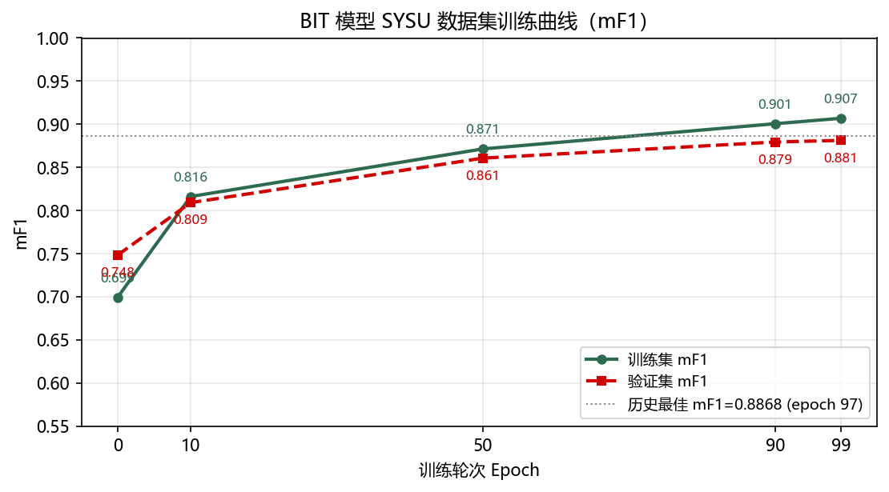
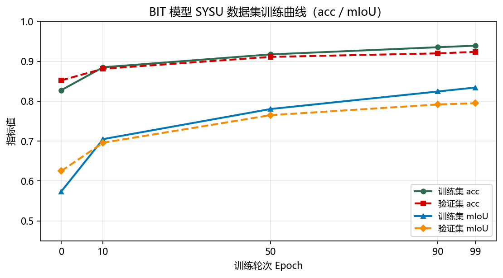
模型在每个 epoch 结束后在验证集（val，1921 张）上评估一次。全训练过程中验证集历史最佳指标为 mF1 = 0.8868（第 97 epoch）；最终第 99 epoch 验证集指标为 Acc 0.924 / mIoU 0.795 / mF1 0.881。各类别 F1 与 IoU 详细指标如下：
| 指标 | Acc | mIoU | mF1 | IoU₁ | F1₁ | Recall₁ | Precision₁ |
|---|---|---|---|---|---|---|---|
| 训练集（epoch 99） | 0.939 | 0.834 | 0.907 | 0.742 | 0.852 | 0.827 | 0.878 |
| 验证集（epoch 99） | 0.924 | 0.795 | 0.881 | 0.681 | 0.810 | 0.755 | 0.875 |
| 验证集历史最佳 | mF1 = 0.8868（epoch 97，best model 权重留存） | ||||||
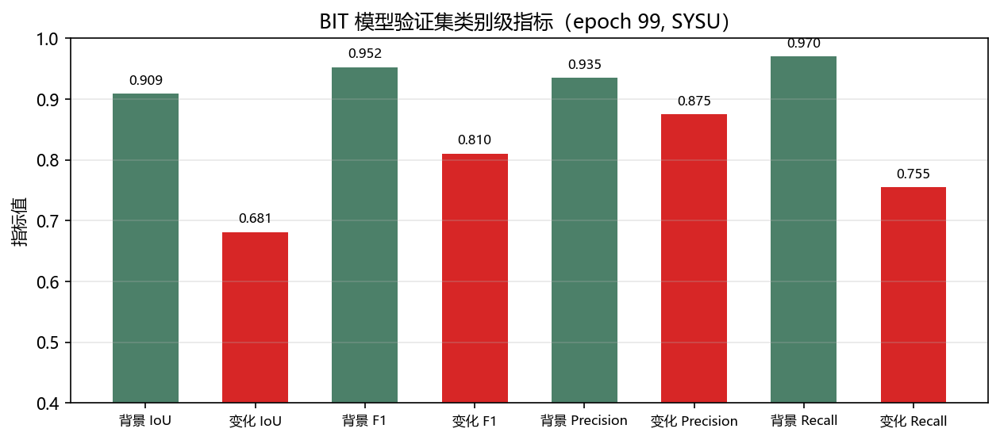
训练完成后，使用 best 权重在测试影像上输出二值预测图（留存于 samples/predict/）。
下图展示了 4 组测试影像的预测结果——白色区域即为模型识别出的"发生变化的像素区域"，可用于后续耕地变化的定量统计：
系统开发采用 Git 版本管理，从 2026-05-10 首次提交到 2026-05-29 收尾，共形成 8 个版本、20 余次提交。 开发遵循"骨架先行 → 能力补全 → 重构整合 → 安全加固"的节奏：
| 版本 | 日期 | 本阶段开发内容 |
|---|---|---|
| v0.x | 05-10 | 搭建全栈骨架：FastAPI 后端 11 个路由、JWT 鉴权、PyTorch 推理服务、前端基础页面，并当日完成 Docker 容器化与硬编码密码清理 |
| v1.0 | 05-23 | 最大规模重构（158 文件 / +20004 行）：AI Agent、图形验证码、接口限流、多模型对比、Otsu、NDVI、GeoJSON、批量检测、数据大屏、AI 分析/分类、双语双主题等 20+ 能力；前端全面模块化（22 个 JS 模块 / 16 页面） |
| v1.0.1 | 05-24 | CPU 服务器部署适配（详见第 7 章） |
| v1.1 | 05-29 | 安全加固与收尾（详见第 6 章） |
前端采用原生 JS ES Modules 构建单页应用，无框架依赖、整体体积 （<2MB）， 划分 16 个功能页面：登录注册、单张检测、批量检测、多模型对比、历史记录、AI 对话、 AI Agent、地块管理、数据大屏、时序分析、模型评估、系统状态等。以下为开发完成后的真实界面截图：
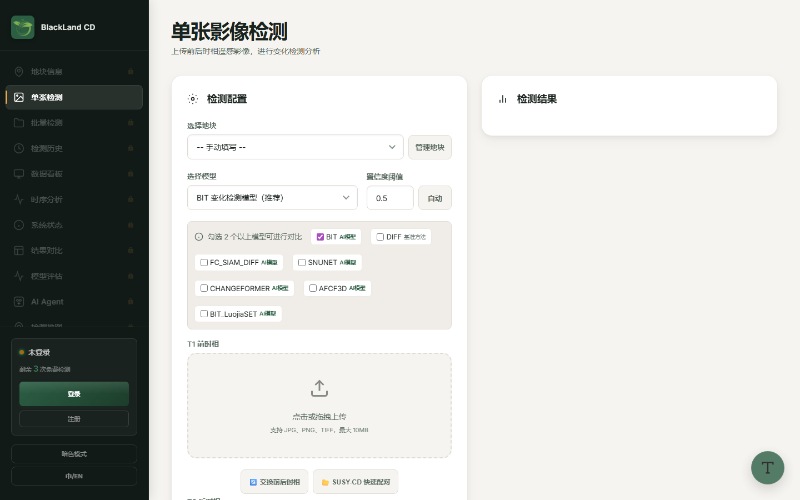
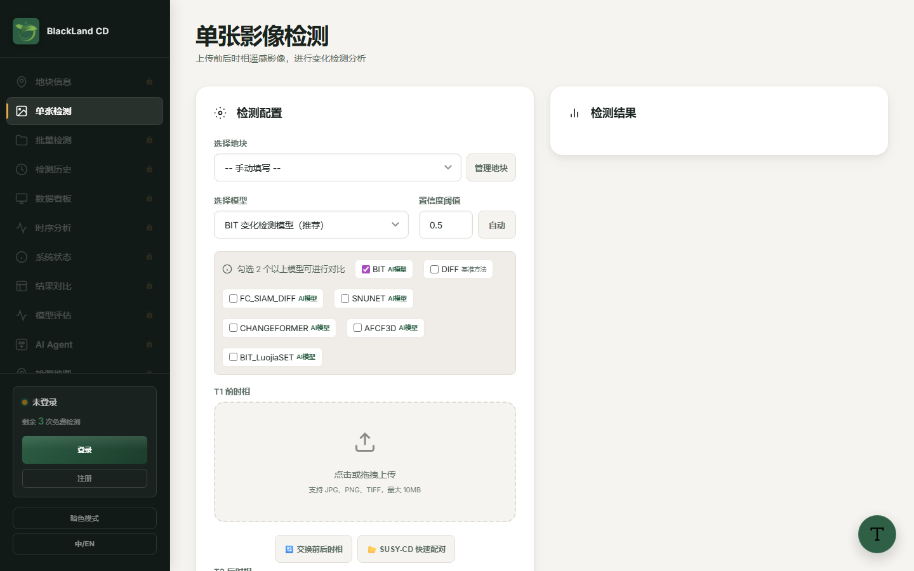
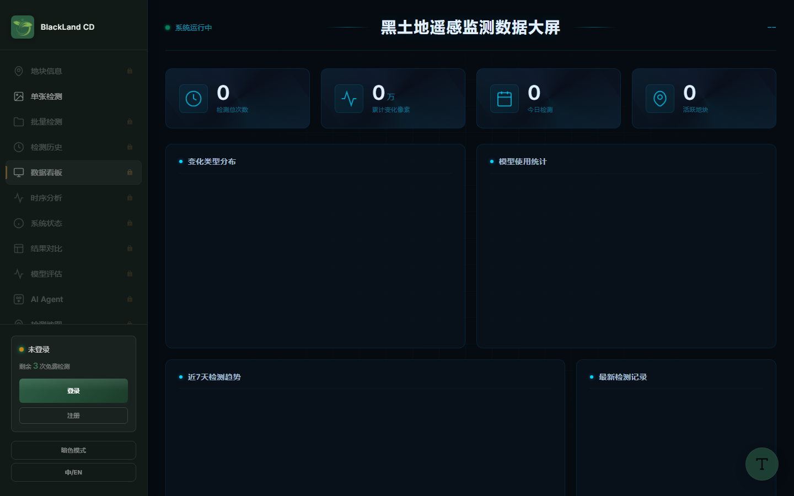
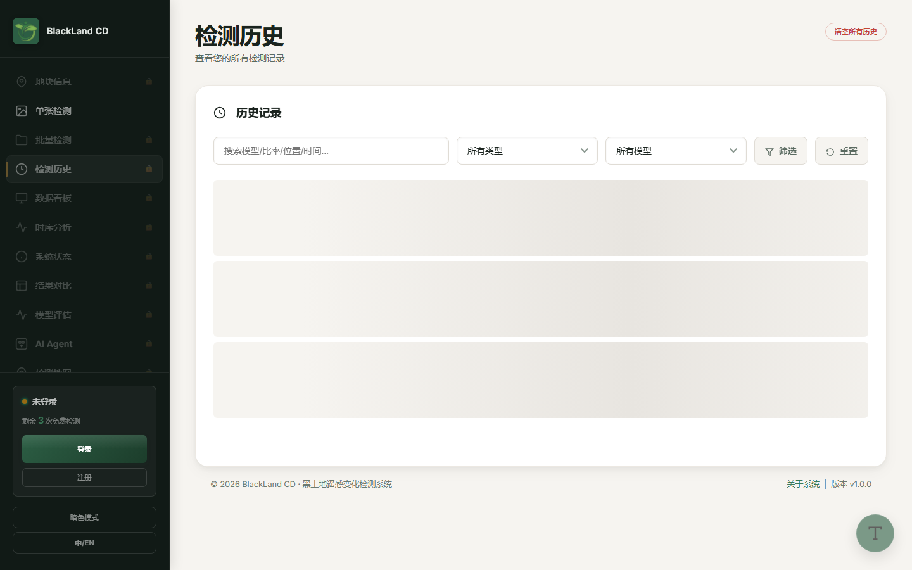
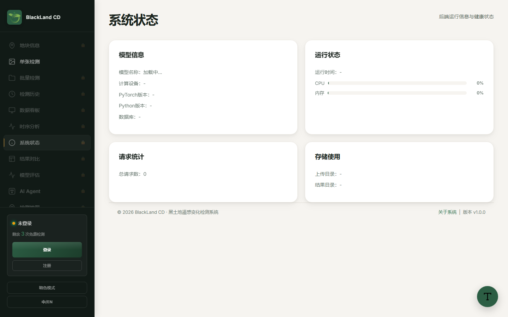
后端基于 FastAPI + Uvicorn 提供 40+ REST API，核心设计包括：
以下为系统对一组真实影像对检测输出的四种结果（掩膜 / 分数热力图 / 融合叠加 / 变化评分）， 以及两组不同场景下的热力融合对比，直观展示模型对耕地变化区域的定位能力：
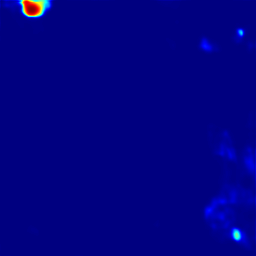
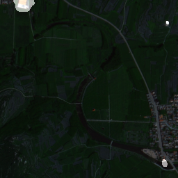
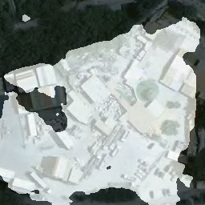
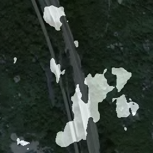
系统在 v1.0 与 v1.1 两个版本分别完成系统测试与安全加固专项测试，共设计并执行 54 项测试用例，53 项通过、1 项部分通过，通过率 98.1%。 测试覆盖用户认证、变化检测、AI 对话与分析、AI Agent、历史记录、地块管理、系统状态、安全与限流、前端 UI 九大模块。
| 测试模块 | 用例数 | 通过 | 失败 | 阻塞 |
|---|---|---|---|---|
| 用户认证 | 8 | 8 | 0 | 0 |
| 变化检测 | 6 | 6 | 0 | 0 |
| AI 对话与分析 | 4 | 4 | 0 | 0 |
| AI Agent 浏览器操控 | 6 | 5 | 1* | 0 |
| 历史记录 | 4 | 4 | 0 | 0 |
| 地块管理 | 3 | 3 | 0 | 0 |
| 系统状态 | 2 | 2 | 0 | 0 |
| 安全与限流 | 8 | 8 | 0 | 0 |
| 前端 UI | 5 | 5 | 0 | 0 |
| v1.1 安全加固专项 | 8 | 8 | 0 | 0 |
| 合计 | 54 | 53 | 1* | 0 |
*TC-AGENT-06 为"部分通过"：前端 Agent 页面 UI 渲染正常，但 Notify.warn 在 Agent 入口未定义时降级为 toast 提示（BUG-01）。
开发与测试过程中暴露并解决了一批真实问题，以下为代表性案例（均记录于测试报告 docs/TEST_REPORT.md）：
request: Request 参数，结果图中的相对 URL 无法按当前请求地址重写，导致构造响应失败。
解决：为路由补充 Request 依赖，新增 _rewrite_url() 统一重写结果 URL（TC-FIX-05 验证通过）。
localhost，部署到云服务器后前端无法加载检测结果。
解决：历史记录与检测接口统一按当前请求 host 动态重写图片 URL（commit c63e9a6，v1.0.1）。
os.environ.get("LOCALAPPDATA") 动态适配跨平台 Chrome 路径（TC-FIX-04）。
weights_only=False 并记录为已知限制（BUG-04）。
| 测试项 | Chrome 131 | Edge 131 | Firefox 138 |
|---|---|---|---|
| 页面渲染 / 文件上传 / 地图交互 / AI 对话 / 主题切换 | ✅ | ✅ | ✅ |
| PWA Service Worker | ✅ | ✅ | ⚠️ 部分受限 |
| 编号 | 问题 / 改进建议 | 优先级 | 状态 |
|---|---|---|---|
| BUG-01 | Agent 页面 Notify.warn 未定义时降级为 toast | 低 | 已降级处理 |
| BUG-02 | Firefox 下 PWA Service Worker 部分功能受限 | 低 | 已知限制 |
| BUG-03 | HTTP 环境下 File System Access API 不可用（文件夹选择） | 低 | 已降级（隐藏按钮+提示） |
| BUG-04 | 模型加载需 weights_only=False，无法使用 PyTorch 安全加载模式 | 低 | 已知限制 |
| IMP-01 | Agent 加入 SSE 流式推送，实时展示执行步骤 | 高 | 待实施 |
| IMP-02 | 检测增加 GPU 加速推理批量模式 | 高 | 待实施 |
| IMP-03 | 检测结果批量导出 Shapefile / GeoTIFF | 中 | 待实施 |
在功能完备基础上，团队对系统进行了一次系统性安全审查，一次性修复 13 个高危/中危问题（commit 3fc6757，涉及 30+ 文件），并以 8 项专项测试验证（TC-FIX-01~08 全部通过）。核心加固项：
| # | 加固项 | 风险等级 | 验证测试 |
|---|---|---|---|
| 1 | 登录与敏感接口强制图形验证码校验 | 高 | TC-AUTH-01/03 |
| 2 | 50MB 请求体大小限制中间件（防大文件攻击） | 高 | TC-SEC-07 |
| 3 | CORS 白名单收紧，/results 静态文件不再返回 * 通配 | 高 | TC-SEC-01/08 |
| 4 | 全接口限流覆盖（12 个 router 差异化速率限制） | 中 | TC-SEC-03/06 |
| 5 | 密码重置响应脱敏（不返回明文密码） | 中 | TC-FIX-01 |
| 6 | datetime.utcnow() → now(timezone.utc)（Python 3.12 兼容） | 中 | TC-FIX-02 |
| 7 | 日志级别降级 INFO，避免生产日志泄露敏感信息 | 中 | TC-FIX-03 |
| 8 | history 接口 500 修复 + 结果 URL 动态重写 | 高 | TC-FIX-05 |
| 9 | DB 会话泄漏修复（上下文管理器统一管理） | 中 | — |
| 10 | 跨平台 Agent Chrome 路径适配 | 中 | TC-FIX-04 |
| 11 | Dockerfile 清理调试指令（force-rebuild hack） | 低 | TC-FIX-06 |
| 12 | HTTP 环境 File System Access API 安全降级 | 低 | TC-FIX-07 |
| 13 | 服务器基础设施加固：2GB swap + ufw 防火墙（仅开放 22/80/443/8000） | 中 | TC-FIX-08 |
系统采用 Docker 容器化部署，运行于阿里云 ECS（1.6GB RAM + 2GB swap，CentOS）： Nginx 反代 + Uvicorn 单进程 + SQLite 轻量数据库 + 静态前端，并针对 CPU 服务器做了专项适配（commit c63e9a6）：
http://39.105.162.133:8000 进行健康检查，返回 HTTP 200，
登录、单张检测、历史记录等核心链路在云端真实环境复测通过，系统正式上线交付。
| 项目 | 配置 |
|---|---|
| 云服务器 | 阿里云 ECS（CentOS，1.6GB RAM，2GB swap，ufw 仅开放 22/80/443/8000） |
| 运行环境 | Python 3.12 + PyTorch 2.x（CPU） + FastAPI + Uvicorn |
| 部署方式 | Docker + docker-compose（Dockerfile + 环境变量模板 .env.production） |
| 数据库 | SQLite（blackland.db，SQLAlchemy 2.0 + Alembic 迁移） |
| 在线地址 | http://39.105.162.133:8000 |
项目团队共 4 人，覆盖算法、后端、前端、数据四个方向，分工与贡献如下：
| 姓名 | 原计划分工 | 实际承担工作 | 贡献评价 |
|---|---|---|---|
| 汤福连 | 整体策划、全局总负责 | 全流程主导：系统架构设计、模型训练（ResNet50-BIT）、后端 API 核心开发（FastAPI）、前端总体设计、AI/GIS 集成、测试与安全加固、云服务器部署上线 | 项目核心，独立完成模型、后端、前端主体与部署上线的绝大部分工作 |
| 刘芮仲 | 后端开发 | 后端部分接口开发、测试用例编写、文档与资料整理 | 参与后端开发与测试，辅助主干工作 |
| 张珏枫 | 后端开发 | 后端辅助接口开发、数据库与部署运维协助、问题排查 | 参与后端辅助与部署协作 |
| 于欣欣 | 前端与数据集标注 | 前端页面辅助开发、高德地图 API 集成、自建黑土耕地数据集像素级标注 | 参与前端与数据标注工作 |
团队在开发过程中建立了规范、可追溯的协作机制：
type(scope): description 语义化格式（feat/fix/chore），关键版本打 tag（v1.0 / v1.1），全部变更可回溯；| 阶段 | 时间段 | 主要参与人 | 产出 |
|---|---|---|---|
| 方案设计 | 2026-03 | 汤福连、全员 | 立项申请书、需求文档、设计文档 |
| 实验训练 | 2026-03~04 | 汤福连、于欣欣 | BIT 权重、训练日志、自建数据集 |
| 系统开发 | 2026-05 | 汤福连、刘芮仲、张珏枫、于欣欣 | 后端 40+ API、前端 16 页 SPA、AI/GIS 集成 |
| 测试与加固 | 2026-05 | 全员 | 54 项测试报告、13 项安全加固 |
| 部署上线 | 2026-05 | 汤福连、张珏枫 | 云服务器上线、演示脚本、答辩材料 |
经过约三个月的开发，BIT_CD 黑土地遥感变化检测系统完成了从需求分析、模型实验、系统开发到安全加固、生产部署的全流程闭环， 最终以 v1.1 稳定版本上线运行于阿里云服务器，形成以下成果：
系统面向东北黑土地保护中"非农化、非粮化、水土流失"等耕地变化的常态化监测需求，可显著降低人工巡查成本、提高巡查频次。 后续计划围绕以下方向持续迭代：
数据来源：训练日志 checkpoints/test/log.txt，训练启动于 2026-03-27 13:48。
| Epoch | 训练集 mF1 | 验证集 mF1 | 验证集 Acc | 验证集 mIoU | 说明 |
|---|---|---|---|---|---|
| 0 | 0.699 | — | — | — | 训练起步，模型已快速具备基础判别能力 |
| … | … | … | … | … | 每 100 iterations 留存 loss / running_mF1 |
| 97 | — | 0.8868（best） | — | — | 历史最佳验证指标，best 权重固化进系统 |
| 99（末） | 0.907 | 0.881 | 0.924 | 0.795 | 训练结束，训练/验证均表现稳定 |
模型对单组影像对推理同时输出：
| 输出项 | 格式 | 说明 |
|---|---|---|
| 变化二值掩膜 | PNG（0/255） | 变化像素为白色，用于面积统计 |
| 变化分数热力图 | PNG（伪彩色） | 0~1 变化置信度可视化 |
| 热力融合叠加图 | PNG | 热力图与原图融合，直观定位 |
| 变化评分图 / 面积统计 | PNG / JSON | 变化像素数、变化比例（可按分辨率换算物理面积） |
项目影像数据来源于高分二号（GF-2）多光谱融合影像，传感器关键参数如下
（依据 docs/sensor_table.html）：
| 传感器类型 | 数据类型 | 波段数 | 波长 (μm) | 空间分辨率 | 幅宽 (km) |
|---|---|---|---|---|---|
| 全色相机（2 台） | 全色 | 1 | 0.45~0.90 | 1 m | 45 |
| 多光谱相机（2 台） | 多光谱 | 4 | 0.45~0.52（蓝） | 4 m | 45 |
| 0.52~0.59（绿） | |||||
| 0.63~0.69（红） | |||||
| 0.77~0.89（近红外） |
系统在云端与本地真实环境均完成端到端检测验证。下图为一组典型输入的完整输出流程（四宫格）： 左上是 T1 期影像，右上是 T2 期影像，左下是变化二值掩膜，右下是变化分数热力图。
更多结果图留存于系统检测历史与 results/ 目录（完整结果图集），可在线复核。
本报告所引用佐证材料清单如下，均存放于项目仓库，可在线核验：
| 编号 | 材料 | 存放位置 | 用途 |
|---|---|---|---|
| E-1 | 需求文档 | docs/REQUIREMENTS.md | 第 3 章 |
| E-2 | 设计方案 | docs/DESIGN.md | 第 3 章 |
| E-3 | 测试报告（54 项用例） | docs/TEST_REPORT.md | 第 6 章 |
| E-4 | 团队分工表 | docs/team_table.html | 第 8 章 |
| E-5 | 传感器参数表 | docs/sensor_table.html | 附录 B |
| E-6 | 比赛演示脚本 | docs/DEMO_SCRIPT.md / .docx | 答辩演示 |
| E-7 | 训练日志 | checkpoints/test/log.txt（3559 行） | 第 4 章 / 附录 A |
| E-8 | 训练曲线图 | train_curve_*.png / val_class_metrics.png | 第 4 章 |
| E-9 | 界面截图 | ui_*.png（登录/单张/大屏/历史/状态） | 第 5 章 |
| E-10 | 检测结果图集 | results/ 目录（完整结果） | 第 5 章 / 附录 C |
| E-11 | Git 提交历史 | v0.1→v1.1.2 共 8 个版本 | 第 2 章 |